Gerenderter Testkorpus (24 Diagramme)
repo-parser-mixed-types-subprocess — 6 Knoten, 0 Kanten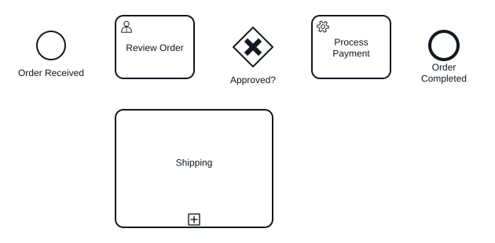
repo-prd-procurement — 6 Knoten, 5 Kanten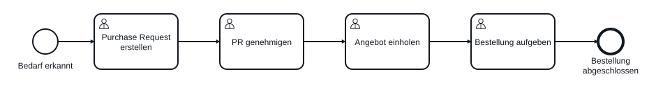
repo-prd-sales-with-gateway — 6 Knoten, 6 Kanten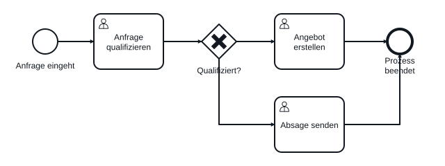
repo-prd-single-start-event — 1 Knoten, 0 Kanten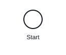
repo-seed-customer-service — 4 Knoten, 3 Kanten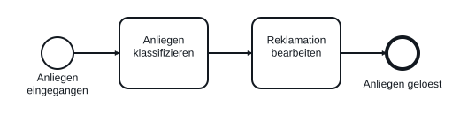
repo-seed-goods-receipt — 4 Knoten, 3 Kanten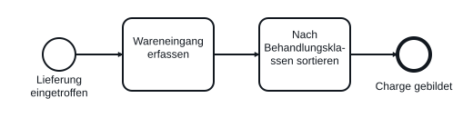
repo-seed-management-review — 5 Knoten, 4 Kanten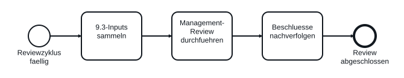
repo-seed-order-callactivity — 5 Knoten, 4 Kanten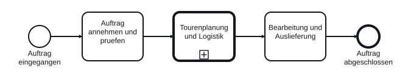
repo-seed-risk-management — 5 Knoten, 4 Kanten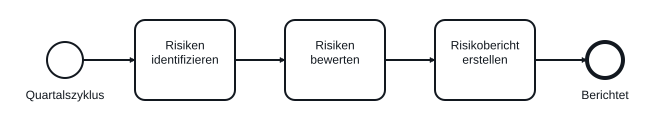
repo-seed-tour-planning — 4 Knoten, 3 Kanten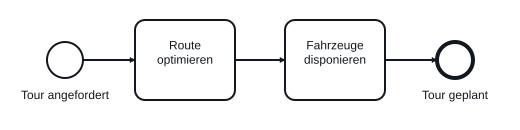
synth-all-event-types — 10 Knoten, 5 Kanten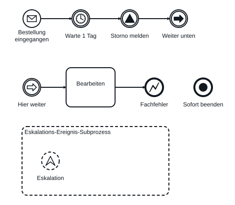
synth-all-gateway-types — 7 Knoten, 8 Kanten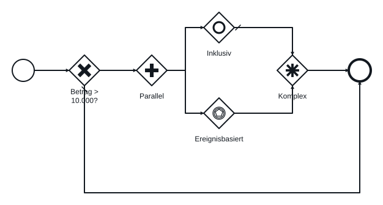
synth-all-task-types — 11 Knoten, 0 Kanten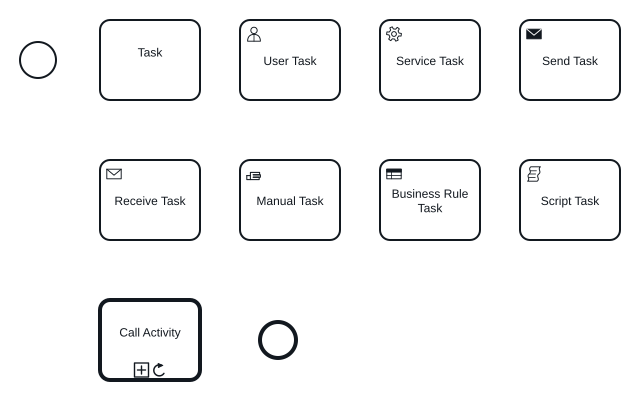
synth-boundary-events — 8 Knoten, 6 Kanten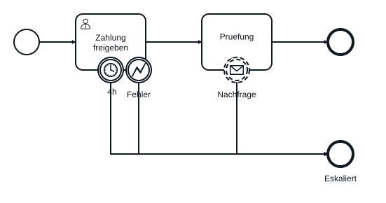
synth-cdata-umlauts-entities — 6 Knoten, 5 Kanten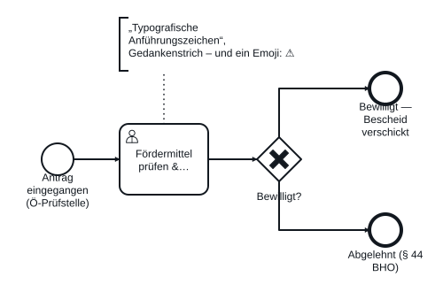
synth-collaboration-pools-lanes — 12 Knoten, 8 Kanten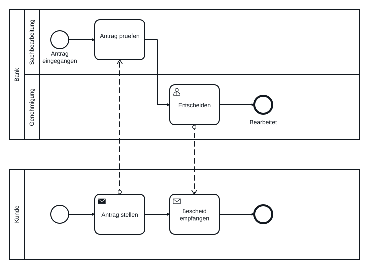
synth-comments-and-pi — 3 Knoten, 0 Kanten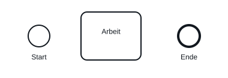
synth-dangling-references — 1 Knoten, 0 Kanten
synth-data-objects-and-artifacts — 8 Knoten, 6 Kanten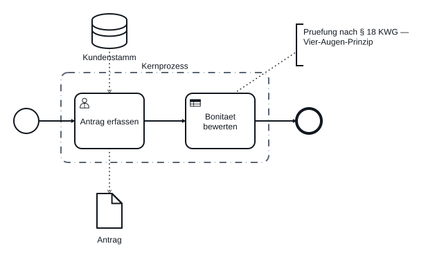
synth-default-namespace-unprefixed — 3 Knoten, 2 Kanten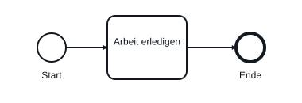
synth-foreign-camunda-extensions — 4 Knoten, 3 Kanten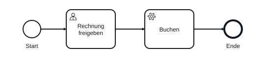
synth-large-flat-process — 62 Knoten, 61 Kanten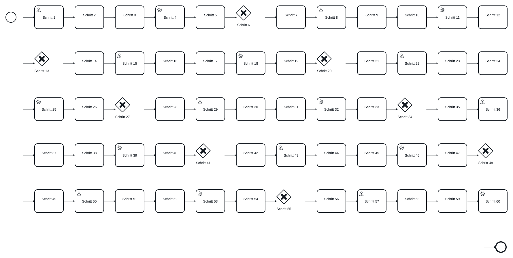
synth-nested-subprocesses — 3 Knoten, 2 Kanten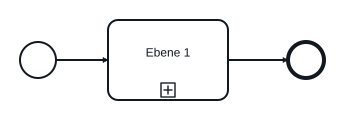
synth-unusual-attribute-order — 3 Knoten, 2 Kanten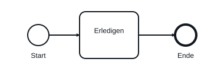